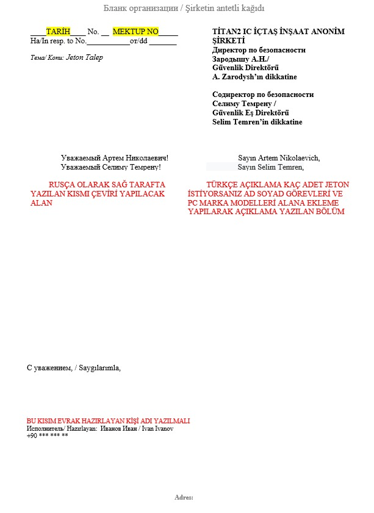
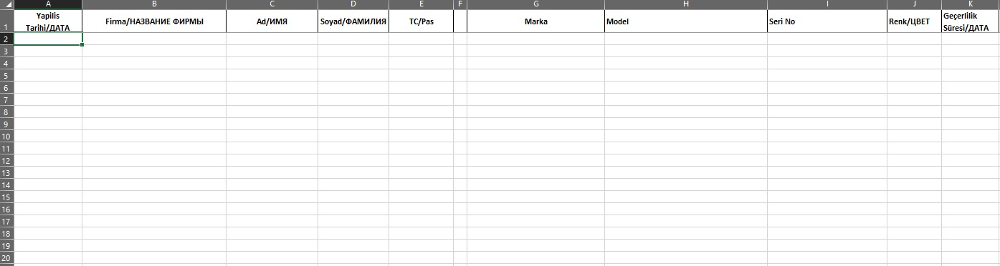

Инструкции по подаче заявок на карту для входа на Атомную электростанцию Аккую и заявку на жетон
1. Заявка на карту жетона
Для постоянного входа-выхода на Атомную электростанцию Аккую или для временных материалов выдается карта жетона на 1 месяц.
Для продления карты жетона после истечения срока действия необходимо подать новую заявку.
Примечание: Для расходных материалов (например, винтов, аэрозольной краски и т. д.) карта жетона не выдается.
2. Требования для ввоза материалов
• Для Электрического-санитарного оборудования, геодезических приборов, кемпинговых материалов, контрольно-измерительных приборов, столовой посуды необходимо указать,
где и с какой целью будут использоваться материалы, и отправить фотографии материалов по электронной почте следующим лицам:
• Севинч Кара sevinc.kara@t2ic.com
• Рыфат Сефа Кючюк rifat.kucuk@t2ic.com
• Для материалов камеры и дронов необходимо отправить письмо следующим лицам:
• Беркей Офлаз berkay.oflaz@t2ic.com
• Борис Попов boris.popov@t2ic.com
• Для электронных материалов, если требуется запрос на жетон, необходимо получить одобрение от следующих компаний и лиц:
• Компании: EGN, AKKUYU TRST, AKKUYU TST, İÇTAŞ NÜKLEER, İÇTUR SERVİS, İÇTAŞ ENDÜSTRİEL, TİTАН-2, T2-IC JV, TSM ENERJI, ELENİA TRUZİM
• Электронные адреса: office@t2ic.com, Андрей Шевченко andrei.shevchenko@t2ic.com
После одобрения господином Андреем Шевченко в разделе "Описание" необходимо предоставить подробную информацию о материале (фото, причина входа/выхода на объект и т. д.), и в теме письма должно быть указано "ЗАЯВКА НА ЖЕТОН ОТ ФИРМЫ". Пример: ЗАЯВКА НА ЖЕТОН НАЗЫМ ИНШААТ. Письмо должно быть отправлено Севинч Кара sevinc.kara@t2ic.com и Рыфату Сефа Кючюк rifat.kucuk@t2ic.com.
3. Заявка на жетон с новым паспортом
Если у сотрудника изменился паспорт, для обработки заявки на жетон необходимо выполнить следующие действия:
Необходимые документы для заявки:
• Фото сотрудника.
• Отсканированные копии первых страниц старого и нового паспорта.
• Отчет о начале и окончании работы по SGK 4A (можно получить через кадровую службу или через электронное правительство).
• Скан задней и передней стороны синего удостоверения личности (или форма заявки и скриншот; если с командировкой, то командировочное удостоверение и рабочая книжка).
Указанные документы должны быть отправлены на электронные адреса tugbahan.karakaya@t2ic.com, muslum.elibol@t2ic.com и ezgi.kaygisiz@t2ic.com.
В теме письма должно быть указано "NEW PASSPORT/НОВЫЙ ПАСПОРТ". Также необходимо вернуть старую карту входа.
Адрес: Модуль 3, 2-этажное здание службы безопасности рядом с зданиями ABK на Аккую.
4. Недостающая информация и важные моменты
• Все поля "Марка", "Модель", "Серийный номер" и "Цвет" должны быть заполены правильно и полно. Эти данные не должны быть пропущены.
• Только указанные фирмы должны следовать заявленной процедуре подачи заявки.
Заявки на жетоны должны быть завершены с учетом вышеуказанных шагов и всех необходимых документов.
ВАЖНО: Только указанные фирмы должны заполнять нижеуказанное письмо, учитывая комментарии, указанные в содержании.
ВАЖНО: Заполнение полей "Марка", "Модель", "Серийный номер" и "Цвет" обязательно. Пожалуйста, не оставляйте эти данные пустыми.

Дополнительно, Excel-файл, указанный ниже, должен быть заполнен с учетом следующих правил:
• Запрос на жетон для сотрудника должен быть сделан на основе номера его идентификационного номера и данных карты.
• Для иностранных сотрудников необходимо указать номер паспорта "Zagran".
• Заявки, поданные с номерами рабочих удостоверений, начинающимися с 99, не будут приниматься во внимание.
• Заявки на жетоны для сотрудников, не имеющих карты входа на Аккую, не будут обработаны.
• Фирма для карты входа на Аккую должна совпадать с фирмой для жетона. В противном случае, карта входа должна быть изменена на фирму для жетона.

Необходимые документы:
• Excel-файл для заявки на жетон
• Письмо (на русском и турецком языках) – для указанных фирм
• Фото карты входа сотрудника на Аккую
ПРИМЕЧАНИЕ: Заявки с недостающей информацией не будут обрабатываться.